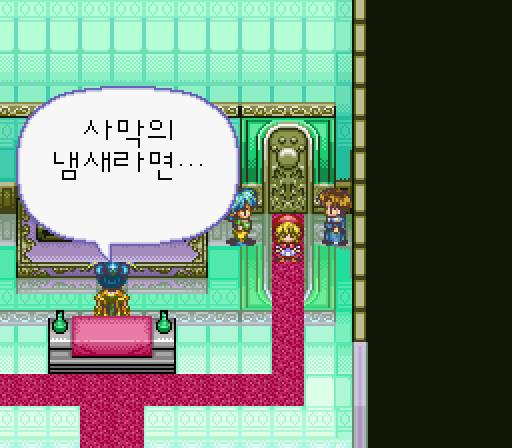
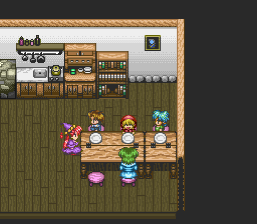

빨간망토 차차 SFC 한글패치를 공개합니다
빨간망토 차차 한글패치와 공략을 공개했습니다. 저는 일본어를 전공했고, 지금도 일본어를 사용하는 일을 하고 있습니다. 번역은 웹 ChatGPT로 초안을 받은 뒤, 일본어 원문과 직접 대조하면서 말투와 농담, 말장난을 고쳤습니다. 어떤 기준으로 번역했고, 어떻게 작업했는지 조금 적어보려고 합니다.
인물의 호칭과 말투, 현지화의 방향은 MBC 더빙판을 기준으로 삼았습니다. ‘당시 더빙을 맡은 사람이 나였다면 어떤 선택을 했을까?’, ‘그때 이 게임이 한국어로 정식 발매되었다면 어떤 모습이었을까?’를 상상하면서 작업했습니다.
더빙판을 다시 보며
우선 이 게임을 로컬라이징하기에 앞서, 당시에 녹화까지 하면서 재밌게 봤지만 정작 더빙판의 호칭이 어땠는지 기억이 잘 안 나서 결국 MBC 더빙판 전 65화를 구해 시청했습니다. OVA까지 시청 완료했고요. OVA는 더빙판을 구할 수 없어서 일본판으로 봤습니다. 그렇게 애니메이션을 다시 보고, 기준이 되는 용어집과 말투집부터 정리했습니다.
가장 어려웠던 점은 일본판과 더빙판의 말투 규칙이 굉장히 다르다는 것이었습니다. 호칭도 다르고, 특히 뚜뚜가 윗사람에게 존댓말과 반말을 섞어 쓰는 부분이 고민이었어요. 일본판에서는 반말인데, 더빙판에서는 반말과 존댓말을 섞어 씁니다. 게임에서도 처음에는 존댓말을 섞었다가 다시 반말로 돌렸습니다. 게임 안에서는 일관되게 하는 게 좋을 것 같아서요.
다만 어른을 부르는 존칭은 더빙판을 따랐습니다. 일본판에서는 차차나 뚜뚜가 세라비를 그냥 ‘세라비’라고 부르거나, 도로시를 ‘도로시짱’이라고 부르기도 합니다. 더빙판에서는 차차를 비롯해 뚜뚜와 빙빙도 도로시와 세라비에게 ‘선생님’, ‘마법사님’, ‘사부님’, ‘스승님’ 같은 존칭을 붙입니다. 따라서 이번 로컬라이징에서도 뚜뚜는 반말을 하되, 세라비를 ‘세라비 선생님’이라고 부르도록 했습니다.
세라비와 도로시는 서로에게 존댓말을 쓰도록 했고, 호칭도 인물에 따라 ‘세라비’, ‘도로시 양’, ‘도로시 마법사님’처럼 다르게 적용했습니다. 일본판의 빙빙은 뚜뚜를 뺀 모든 사람에게 존댓말을 쓰는 캐릭터지만, 이번에는 더빙판을 기준으로 아이들에게는 반말을, 어른 캐릭터에게는 존댓말을 하도록 정리했습니다. 이 기준 또한 더빙판과 같습니다.
기술의 구호와 말버릇
외래어와 일본의 지역적인 농담도 더빙판의 현지화를 기준으로 삼았습니다. 당시 더빙판에는 영어를 포함한 외래어를 우리말로 바꾼 사례가 많습니다. 차차의 매지컬 프린세스 기술이 대표적인데, 제가 확인한 MBC 더빙판에서는 ‘뷰티 세레인 애로우 매지컬 슛!’을 ‘환상의 마법사! 받아라 정의의 화살!’로 현지화했습니다.
위키에 적힌 구호와는 차이가 있었지만, 이번 패치는 제가 직접 확인한 MBC 더빙판의 표현을 기준으로 삼았습니다.
후에 불사조의 검을 얻고, 화살을 쏴서 불사조를 부를 때는 구호가 ‘날아라 정의의 화살’로 바뀝니다. 불사조의 검이나 버드 실드도 장면에 따라 구호가 조금씩 다르더군요. ‘윙크리스’를 외칠 때도 있고 안 외칠 때도 있습니다. 버드 실드 역시 ‘황금날개 업’이라고 외칠 때와 ‘업’이 안 들어갈 때가 있고요.
게임 데이터에는 ‘슈퍼’가 붙은 강화판 기술도 있어서, 더빙판의 구호 차이를 살려 문구를 다르게 적용했습니다. 그런데 끝까지 플레이해도 나오지 않더군요. 나중에 확인해 보니 정상 전투 메뉴에 연결되지 않은 기술 데이터로 보였습니다. 강화 기술을 얻는 곳을 놓친 줄 알았는데 말이죠. ^^;;
‘헬즈 파이어’, ‘파이어 스톰’처럼 영어로만 되어 있는 마법 기술도 있는데, 더빙판에서는 이런 기술들을 되도록 우리말로 바꾸었습니다. 이번에도 그 기준을 따라 한글화했습니다. ‘러블리 러블리~’ 하는 부분도 있는데, 이런 부분까지 더빙판이라 생각하고 우리말로 옮겼습니다.
캐릭터의 말버릇이나 설정도 마찬가지입니다. 카스칼의 ‘채찍으로 찰싹찰싹이다!’ 같은 말버릇은 더빙판에서 ‘이 채찍이 불을 뿜을 것이다!’로 현지화해서, 이를 따랐습니다. 마린, 칭칭과 요요의 설정 등도 일본색이 나지 않도록 더빙판을 기준으로 했습니다. 요요의 닌자 설정을 ‘날쌘돌이 요요’로 바꾸는 식입니다.
우리말로 옮긴 말장난
아이템 이름도 지나친 영어 표현이나 일본색이 나지 않도록 적절히 우리말로 바꾸었습니다. 뚜뚜의 전병은 ‘쌩쌩 쌀과자’, 호게인은 ‘박카쌩’, 매지컬 드링클은 ‘부활명수’로 바꾸는 식으로요.
말장난도 꽤 어려웠습니다. 원작부터 말장난이 굉장히 많이 나와서, 더빙판에서도 고심한 흔적이 많이 보이더군요. 게임에도 일본 지역명에서 이름을 딴 캐릭터가 나오고, 말버릇과 말장난이 많습니다. 그걸 이용한 퀴즈까지 있고요.
이런 부분도 모두 로컬라이징했습니다. 퀴즈는 한국인이 알아들을 수 있는 말장난으로 바꾸었고, 캐릭터 이름은 나니와를 ‘부산댁’, 미치노쿠를 ‘강원댁’으로 바꾸었습니다. 아사리짱은 ‘소라’라는 이름으로 현지화했습니다. 이름에 따른 말장난도 함께 바꾸고, 사투리도 캐릭터마다 다르게 적용했습니다.
말풍선 하나까지
기술적인 이야기도 조금만 하자면, 빨간망토 차차의 대화창은 말풍선으로 이루어져 있습니다. 대사의 내용과 길이에 따라 말풍선 크기와 모양이 달라지는데, 한국어의 길이와 내용에 맞춰 적절하게 바꾸었습니다.
원작의 왼쪽 정렬은 말풍선보다는 그냥 ‘글’ 같은 느낌이 드는 게 좀 안 예쁘더군요. 그래서 가운데 정렬을 기본으로 삼았습니다. 다만 대사의 길이와 모양에 따라 왼쪽 정렬도 함께 사용했습니다. 정렬이 달라지는 부분도 실제 말풍선을 하나씩 확인하면서 의도적으로 조정한 것입니다.

검수 플레이는 엔딩까지 두 번 진행했습니다. 저도 문제가 없을 거라고 생각했는데, 그 과정에서 특정 대화의 진행 멈춤과 두 장소의 맵 그래픽 깨짐을 발견했습니다. 이런 부분도 수정하고 해당 구간을 다시 확인했습니다. 역시 실제로 끝까지 진행해 보는 검수는 필수라는 생각이 들더군요.
다몽의 말버릇을 살려 기술 대사도 ‘~다몽!’으로 옮겼는데, 직접 플레이하다 보니 다른 보스도 같은 지진 기술을 쓰더군요. 호출 코드를 확인해 보니 이 대사만 공유하고 있었습니다. 그래서 지진 구호는 ‘흔들어 버릴 거야!’로 바꾸고, 다몽의 나머지 대사에는 말버릇을 남겼습니다. 이런 부분도 실제로 플레이하면서 발견하고 고쳤습니다. ^^;;
끝까지 함께한 모험
더빙판을 다시 보고, 검수 과정에서 게임을 끝까지 살펴보니, 이 게임은 굉장히 잘 만들었다는 생각이 들었습니다. 정말로 애니메이션의 분위기를 그대로 옮긴 것 같은 느낌이었어요. ‘빨간망토 차차가 RPG 게임이 되면 어떨까?’ 하는 기대를 그대로 충족해 주는 게임이었습니다. 말장난도 그렇고, 곳곳에 있는 차차식 개그와 농담의 흐름, 원작의 기술을 충실하게 재현한 부분까지… 팬에게는 선물 같은 게임이더군요. 더빙판을 다시 보면서도 진짜 계속 웃었는데, 게임에도 그 맛이 살아있어서 좋았습니다.

하트를 모아 성장하는 방식도 간단해서 좋았지만, 개인적으로는 경험치를 쌓으며 레벨을 올리는 재미도 있었으면 좋겠다는 생각이 들었습니다. 복잡한 성장 시스템보다는 이야기와 이벤트를 따라가는 데 무게를 둔 게임으로 느껴졌어요. 저야 팬이라서 너무 좋았지만요.
발매사도 토미인데, 지금의 타카라토미로 이어지는 그 장난감 회사가 맞더군요. 아이들과 함께 해보기에도 아주 좋은 게임 같습니다.
공략도 예쁘게 만들었습니다. 처음부터 카니발 천막에 못 들어가서 막히는 분이 바로 나올 것 같은데, 막힐 때마다 보시면 좋겠습니다. 특히 7화에 있는 차탄의 색깔 퀴즈는 생각보다 메모를 하면서 기억하지 않으면 풀 수 없는 고난도 퀴즈입니다. 싸울 때 차탄의 순서와 대사를 잘 메모해 가면서 푸세요. 저는 다 싸우고 색깔이 기억이 안 나서 못 풀었습니다.(;;) 그래서 다시 처음으로 돌아갔었습니다;;ㅠㅠ 저 같은 불상사를 피하기 위해 공략 페이지에 풀이를 남겨둡니다. 공략을 참고하시면 좋습니다.
이제 직접 만나 보세요
한글패치는 패치 배포 페이지에서 받을 수 있고, 공략 페이지도 함께 열어두었습니다. 웹에서 원본 ROM을 선택해 바로 패치할 수 있고, Windows용 오프라인 적용 도구와 xdelta 패치도 제공합니다. Windows용 도구는 배치 파일을 실행하면 브라우저에서 패치하는 화면이 열리는 방식입니다.
패치 적용에는 지원하는 일본판 원본 ROM이 별도로 필요합니다. 지원하는 파일의 조건과 적용 방법은 배포 페이지를 확인해 주세요.
검수는 에뮬레이터에서 진행했으며, 슈퍼패미컴 실기에서는 확인하지 않았습니다. 즐겁게 플레이해 주세요!